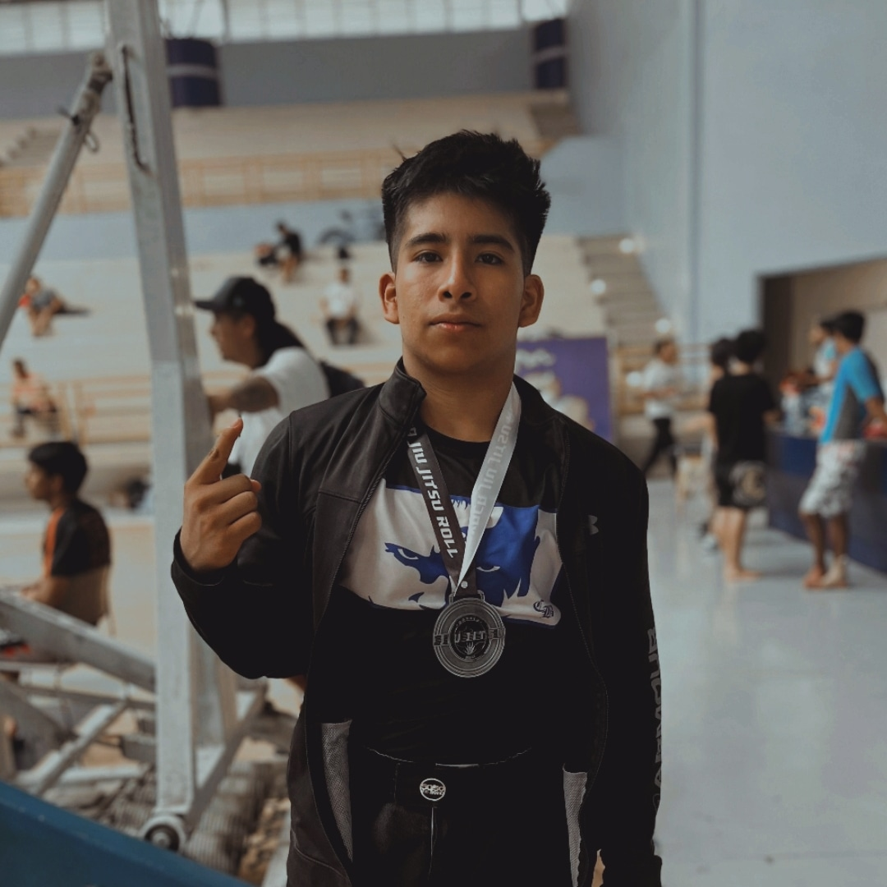

Oaxaca Legal Assistant
Sistema RAG local para la ley de tránsito y movilidad de Oaxaca usando Ollama, ChromaDB, LangChain y bot de Telegram.
PythonGraphRAGChromaDBOllamaTelegram Bot
Ver repositorio ↗Construyo infraestructura confiable, software web de alto rendimiento y sistemas inteligentes orientados a resultados.

🥉 3rd Place at ITAM Sports Analytics Conference 2026
Data Pipeline & Interactive Vercel Dashboard for Club América (André Jardine 183 match dataset).
01 / ABOUT
Desarrollador Full-Stack, aspirante a Arquitecto de Redes y Lead Developer en Arctix Corp. Estudiante de Ingeniería en Computación en la Universidad Tecnológica de la Mixteca (UTM). Apasionado por la optimización a bajo nivel, desarrollo de infraestructura de redes, arquitecturas RAG locales y software web de alto rendimiento.
Arquitectura de Redes, Servidores e Infraestructura.
Desarrollo Web Full-Stack de Alto Rendimiento.
Sistemas de Bajo Nivel y Lógica Digital.
Pipelines de Datos, RAG y Analítica.
CORE STACK
C · Assembly x86-64 · VHDL · C# · Python · TypeScript · SQL · JavaScript
Next.js · React · Node.js · FastAPI · Tailwind CSS
PostgreSQL · MongoDB · Docker · AWS · SQLite · Firebase
Cisco IOS · Git · GitHub · Ollama · ChromaDB · Linux · Darktable
02 / EDUCATION & CERTIFICATES
SEP 2024 — JUN 2029 · EN CURSO
Universidad Tecnológica de la Mixteca (UTM) · Oaxaca, México
03 / SELECTED PROJECTS
Sistema RAG local para la ley de tránsito y movilidad de Oaxaca usando Ollama, ChromaDB, LangChain y bot de Telegram.
Pipeline de datos y dashboard en Vercel para analizar 183 partidos dirigidos por André Jardine usando StatsBomb.
Aplicación de escritorio para el cálculo automatizado de conjuntos Primeros y Siguientes en algoritmos de compiladores.
Analizador léxico con tokenización automatizada y gestión de errores para traductores de C# a C++.
Algoritmo de ordenamiento Selection Sort escrito en ensamblador NASM de 64 bits e integrado con C.
Diseño de marquesina desplegable y contadores síncronos en tarjeta FPGA Xilinx Nexys 2.
04 / BLOG & PUBLICATIONS
05 / CONTACT
Disponible para proyectos con Arctix Corp, consultoría de software e infraestructura. Respuesta garantizada en menos de 24 horas.